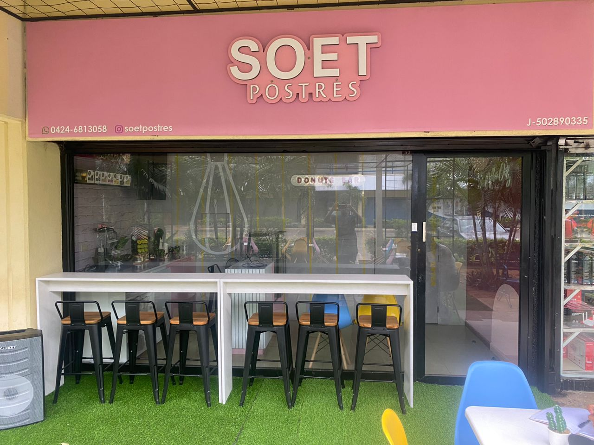

En Soet Postres, nos complace presentar nuestras nuevas y modernas instalaciones en nuestra tienda física ubicada en el Centro Comercial Bulevard Delicias, conocido como "Delicias Norte" en Maracaibo, estado Zulia, Venezuela. Nuestra tienda ha sido diseñada pensando en brindarte una experiencia única desde el momento en que ingreses. Con un ambiente acogedor y elegante, te invitamos a disfrutar de un espacio donde los aromas dulces y la belleza de nuestros productos se fusionan para crear un entorno encantador. En nuestras instalaciones, encontrarás una amplia variedad de productos elaborados con los mejores ingredientes y con un toque de creatividad y pasión en cada creación. Desde nuestras donas, tortas, brazos gitanos, pie de limon y marquesas, cada producto está diseñado para deleitar tus sentidos y satisfacer tus antojos más dulces.

Tambien hemos creado una encantadora terraza al aire libre en frente de nuestro local. Con un enfoque naturalista y acogedor, hemos diseñado este espacio para que nuestros clientes puedan disfrutar de sus postres favoritos en un entorno relajante y único. La terraza está cuidadosamente decorada con elementos naturales, como plantas y flores, creando un ambiente fresco y tranquilo. Los muebles y la distribución han sido seleccionados para brindar comodidad y permitir una experiencia placentera al aire libre. Con esta expansión, ahora puedes deleitarte con nuestros postres en la terraza, disfrutando de la brisa y del ambiente agradable mientras saboreas cada bocado.
Ya sea que prefieras una torta exquisita, una dona tentadora o cualquier otro de nuestros productos artesanales, nuestra terraza naturalista es el lugar perfecto para relajarte y satisfacer tus antojos dulces. En Soet Postres, nos enorgullece ofrecerte un espacio adicional donde puedas disfrutar de la dulzura en un entorno naturalista y acogedor. Nuestra terraza es el lugar ideal para reuniones con amigos, citas románticas o simplemente para disfrutar de un momento de placer personal.